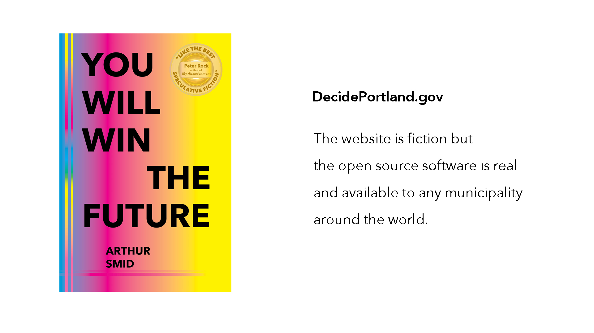
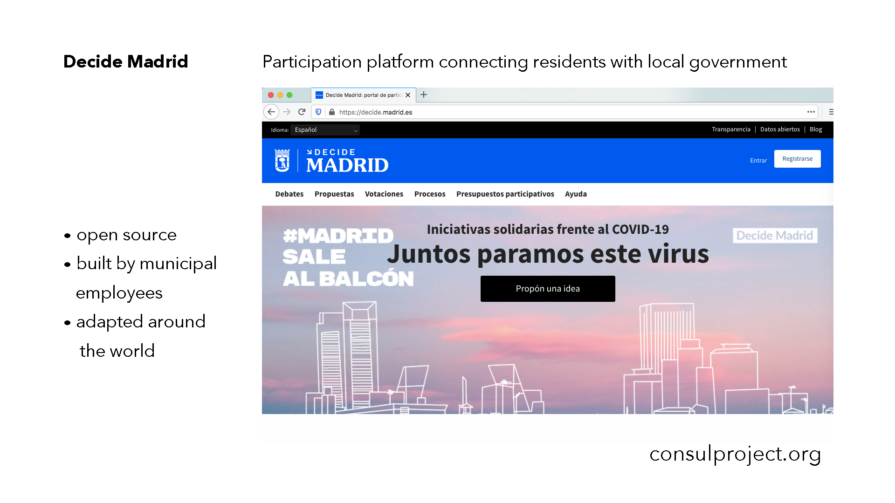
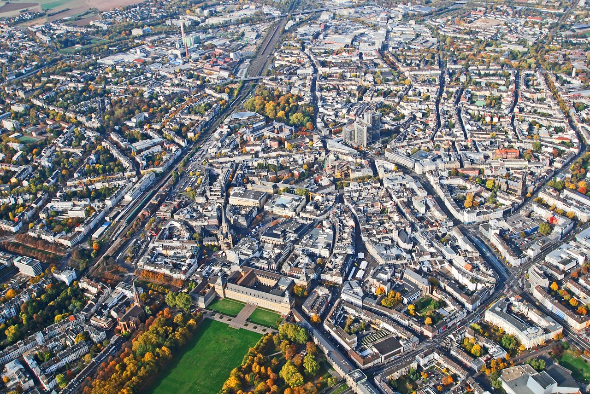

Participating in Public: Municipal Software for Online Dialogue and Decision-Making
I wrote a novel about software developers and included a government website called Decide Portland. This is set around twenty years from now, but that website isn’t really science fiction. I based it on open source software created by employees of the City of Madrid. Anyone in the city can use Decide Madrid to debate what they want to see happen in their neighborhoods, to draft proposals, read and comment on the city’s own draft legislation, and to allocate one hundred million euros each year toward projects throughout Madrid. And any government can adapt that software.

We’ll learn how this process came to be, how the platform works, the challenges encountered in its use, and the solutions being explored. We’ll also discover how a large group of people arrive at a common understanding online and provide qualitative data for policymakers. Many here will already be familiar with government websites but we’ll look specifically at the ways people connect with decision-makers in three countries: Iceland, Spain, and Taiwan. They all use software for public engagement, in each country, a government official upon election and from within the administration catalyzed its use. This journey through the development of digital tools for democracy will give us an idea how participatory political processes might be introduced to local and state governments in the US.
Given that I’m asking what is right for all life on earth, I can say that war is wrong, a wrong way to end conflict or to negotiate anything. Is warfare the default state of our civilization? Is it the only possible reality for humanity? But what if we’re wrong? Now with so many billion human beings on earth it is no longer an individual’s memory, or even the cultural stories that determine what is right or wrong, but the aggregate of all actions that determine whether the individual act is good or bad. It’s statistical, we refer to “justice for all” in numbers now, We are the 99%. That’s a bestseller of data storytelling. And 350, that’s not a number, it’s a movement: people have organized under that name (regrettably we’re now past 400 parts per million carbon dioxide particles in the atmosphere). During the Industrial Revolution the smoke stacks created pollution over factory and town, the smoke was noxious, that was known by people. But the smoke wasn’t wrong, yet. Right and wrong would be determined through a contest of wills, by who stood to benefit and who to suffer. Now, it is not one smoke stack that has produced all of our carbon dioxide emissions, it is in aggregate that burning fossil fuels throughout time accumulates carbon dioxide in our atmosphere and it is known more by statistics and numbers. But can society be governed by statistics? Or are those numbers only used to confirm or to deny the decisions made by people?
For the first time in history we are able to collect data on global inequality. It is a myth that we can’t track global capital flows. It’s by design that we are unable to track global capital as it squirrels itself through a tax loophole into some offshore account. The natural world is not a human thing but our economy is, it obeys human laws. The nature of the law and its enforcement is a reflection of power. It is an instrument of power. In the interests of wealth, we have become subjects to a neoliberal economy whose purpose can be understood by the results, the accumulation and concentration of wealth. This undermines civil society by making the people elected to high office responsive to wealth rather than their constituents. Without a functioning democracy our society is unable to access or express a shared understanding of what is right and wrong. Through misinformation and misdirection, the beliefs and values that reinforce economic inequality become status quo for everyday citizens.
Digital culture offers tools for humanity to access its shared knowledge and realize the potential for collective decision-making. For our society to embody what people commonly understand to be right and wrong, people must have access to information and the ability to participate in democracy. Among various platforms for strengthening democracy, Decide Madrid and vTaiwan are exemplary. No country is perfect, but Spain is a multi-party parliamentary democracy. And so is Taiwan. This allows for creative ideas to enter the debate, and be implemented.
What if government wasn’t an instrument of oppression and extraction, but one of support and regeneration? This is possible through multi-party parliamentary democracy and evidence-based public policy. Government that trusts people are smart enough for self-government because it has invested in them, where people have made the decision to support public spending for their own benefit. By investing together we experience better results than by spending as individuals.
Given the prevalence of individualism, the atomization of people and an obsession with the creation of personal identity through private consumption, some might say that it’s impossible for society to act collaboratively. Or more cynically, by dividing people into opposing groups, we are easier to manipulate. But it doesn’t benefit us to reiterate the divisions of partisan politics, the binary simplicity of political debate in the United States has reduced our democracy and narrowed the debate. Think of the two parties as if you could only chose between two outcomes. This reduces the range of ideas; and worse, a two party system divides the country. Reducing the world to black and white polarities is only useful for simplistic rhetoric and manipulation.

The internet has revolutionized communications and it is yet to become a platform in the United States for municipal, state, or federal governments to share power with citizens. It has been used to consolidate power by financial actors, the minute there’s an A.I. the first question is “Can it trade stocks?” Wait, minor digression: a service, an online platform for parents to offer their children as financial assets, providing a way to connect surplus capital with labor. Venture capitalists invest money up front in a child and then capture future returns on that person’s labor; these new financial assets (people) have a secondary market in insurance for investors—in the event of death, dissolution, or dismal returns.
This is the beginning of networked humanity. No. No. See how this can derail. Although investing in people isn’t bad, it’s the motive and design of the investment that makes it emancipation or slavery. But I do think the words “networked humanity” have the potential to affirm our digital citizenship. And rather than the individual hero we’re familiar with from books and movies, rather than one person finding their voice and expressing themselves—being famous! being a hero!—a networked humanity is the formation of community that can think its way out of a trap by working together. Beyond political borders, it is a distributed city that pools resources in the same way the global elite has concentrated capital. This is how society has the capacity to reinvent our economy and our future.
For more information:
vTaiwan is run by citizens, written in English, and maintained by g0v, a decentralized civic tech community from Taiwan. Join is a national platform for online participation run and maintained by the government—to check it out, Google Chrome can translate pages from Join.
Decide Madrid built their platform with Consul software:
This is How People Power Wins an Election, The Story of Ahora Madrid